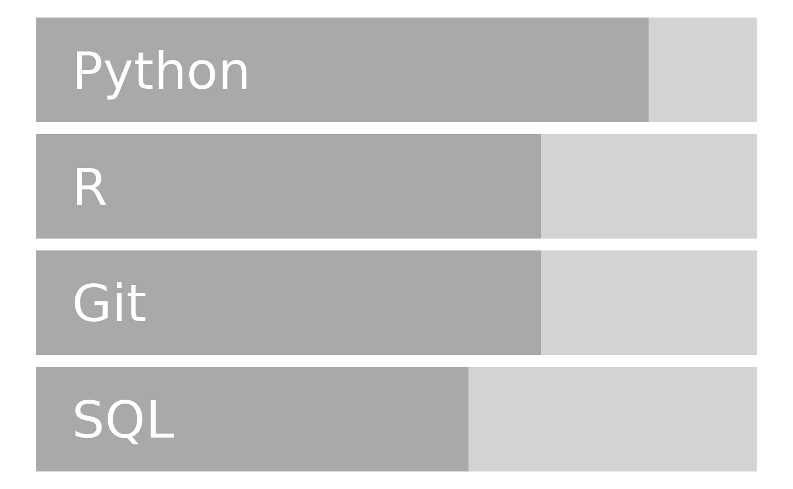

Build a CV using autocv
I walk through the
basic steps involved in generating a CV using
autocv.
vignettes/example-cv.Rmd
example-cv.RmdIn this vignette I will cover the fundamental use case for this package: automatically building a resume from spreadsheet data. If you have no interest in customizing or building upon the tools in this package, then you can safely ignore the Reference section of this documentation and just follow along with this article.
Data prep
Let’s walk through the process with an end-to-end example using some
fake data. The first step is to load the data, which we can do with the
data() function since the datasets we will be using are
included in autocv.
# Load packages
library(autocv)
library(glue)
library(readxl)
library(stringr)
library(magrittr, warn.conflicts = FALSE)
library(dplyr, warn.conflicts = FALSE)
# Load data and preprocess
data("example_position_data", package = "autocv")
position_data <- example_position_data %>%
autocv::preprocess_entries(
style = "markdown",
order = "reversed",
bullet_style = "-"
)
data("example_skill_data", package = "autocv")
skill_data <- example_skill_data
data("example_contact_data", package = "autocv")
contact_data <- example_contact_data %>%
autocv::preprocess_contacts(., style = "markdown")
data("example_text_data", package = "autocv")
text_data <- example_text_data %>%
autocv::preprocess_text()Let’s now do some pre-processing to get these sections into a format that can be displayed in R Markdown:
name <- contact_data$address_text[contact_data$loc == "name"]
role <- text_data$text[text_data$loc == "title"]
bio <- text_data$text[text_data$loc == "bio"]
suffix <- contact_data$address_text[contact_data$loc == "title"]
pic_text <- glue::glue_collapse(
contact_data[contact_data$loc == "pic",]$contact_text
)
contact_text <- autocv::print_contact_info(
contact_data,
section = "both",
sep = "\n"
)Margin
The first element of the CV is the aside, which contains
the contact information and any skills you choose to include in the
right margin of the CV.
We print the following header to tell pagedown when this
section starts:
glue("# Aside")Contact information
The contact card …
We need the following header:
glue("## Contact {{#contact}}")We then print the contact card as follows:
contact_text- Mississauga, ON
- bainmatt@outlook.com
- (647) 567-2509
- Personal Website
- GitHub
Download link
You may wish to include a link to download …
# If `doctype` is html add link to download a pdf version
if(params$doctype == "HTML"){
paste0(
"[<i class='fas fa-download'></i> Download as a PDF]",
"(https://github.com/bainmatt/resume/main/bainmatt_resume.pdf)"
) %>%
glue::glue_collapse(sep = "\n")
}Skills
The skills …
You may wish to give these sections headers:
glue("## Skills")You would then print the corresponding skill bars as follows:
autocv::build_skill_bars(filter(skill_data, core_tools == "x"))
Datestamp
You may wish to include a datestamp to …
glue("Last updated on ", "{Sys.Date()}")Last updated on 2024-06-18
Main section
We print the following header to tell pagedown when this
section starts:
glue("# Main")Bio
Your bio is a one-paragraph-long synopsis of what you bring to the
table and what you’re looking for. The example_skill_data()
dataset includes two sections, each a single sentence:
experience and objective:
glue("{bio}")I am a highly motivated analyst with 4+ years of experience across academia and industry leveraging data and advanced statistical models to extract value from data. Currently seeking a data science role in which I can apply an object-oriented approach to analytics, visualization, and machine learning development.
Position sections
The remaining sections, as we’ll see, are all printed in the same way:
- First we print the header with an icon from the font-awesome library.
- Then we print the section using the
print_section()function.
Professional Experience
First we print the header:
glue("## Professional Experience ", "{{data-icon='suitcase'}}")Then we print the content:
autocv::print_section(position_data, 'work')Senior Data Scientist
Markel Corporation
London, ON
Feb 2023 - Jan 2018
- Associate Data Scientist (2018-2020) - Data Scientist (2020-2021)
- Data science developer on an agile sprint team managing applications that prioritize and monitor incoming
- Develops, maintains, and deploys machine learning models, primarily GLMs, decision trees, and dabbling in unsupervised techniques
- Conducts ad hoc analysis to diagnosis trends, analyze model performance, and make business recommendations based on data and statistical tests
Research Analyst
University of Western Ontario
London, ON
Aug 2022 - Sep 2021
- Print journalist and public affairs manager for a 4,000-person organization, supervised three direct reports, advised executive staff, and deployed twice to Afghanistan
Manager, Analytics
Markel Corporation
Richmond, VA
Jan 2022 - Jan 2014
- Leads a team of data scientists and data engineers building pilot solutions and conducting experimental design at a Fortune 300 specialty insurance company
- Leverages test-and-learn methodology, delivering pilot solutions quickly to small groups to measure value before scaling products
Cognitive Neuroscientist
University of Western Ontario
London, ON
Aug 2021 - Jul 2018
- Master’s Researcher (2018-2020) – Doctoral Researcher (2020-2021) (R, MATLAB)
- Designed and deployed 11 experiments assessing neural processing of speech in hundreds of research subjects (Python)
- Implemented a novel nonparametric statistical framework to measure hearing deficits based on brain imaging techniques, suggesting avenues for improved diagnostic testing
- Identified optimal hyperparameters for behavioural time series analysis, revealing coupled signal fluctuations across people exposed to audio designed to elicit a brain response
Education
First we print the header:
glue("## Education ", "{{data-icon='graduation cap' data-concise='true'}}")Then we print the content:
autocv::print_section(position_data, 'education')Certifications
First we print the header:
glue("## Certifications ", "{{data-icon='award' data-concise='true'}}")Then we print the content:
autocv::print_section(position_data, 'certifications')Selected Projects
First we print the header:
glue("## Selected Projects ", "{{data-icon='code-branch' data-conside='true'}}")Then we print the content:
autocv::print_section(position_data, 'projects')datopy (Data Tools for Python) [GitHub]
N/A
N/A
Present - Jan 2024
(PyTest, MyPy, Pydantic, Sphinx, Github Actions)
Adding position sections
You aren’t restricted to these particular sections. You may wish to
change or add to them by modifying the loc column in your
position_data spreadsheet (see the
example_position_data() dataset for reference). Some other
possible sections you might wish to include are:
- Selected Publications
- Selected Writing
- Additional Information
Putting it together
To see what the finished product looks like, you can:
- Copy/paste each code block in this article into an R chunk within an R Markdown notebook in your project directory
- Add the following yaml and knitr headers to the top of the document:
---
title: "My resume"
output:
pagedown::html_resume:
self_contained: true
params:
doctype: "HTML"
---
knitr::opts_chunk$set(
results='asis',
echo = FALSE
)- Knit.
The resulting R Markdown notebook should look like this. Knitting it will give the output here.
Customization
The repository for this package also includes:
- Custom css stylesheets:
To apply these styles, modify the output field of your yaml block as follows:
output:
pagedown::html_resume:
css: ['inst/css/custom_resume.css', 'inst/css/styles_html.css', 'resume']
self_contained: true- More sophisticated Excel spreadsheets housing the resume data in multiple sheets, with guidelines and conditional formatting to help you adhere to them:
- Convenience functions for rendering the resume:
- Equivalent tools for creating resumes and cover letters with different formats.
To make the most of these tools, I recommend you clone the files into the corresponding directories on your computer and modify the contents of the following files using what we’ve covered here:
View a complete example, with custom CSS styling applied, here.
Alternatively, to create a resume or cover letter with a different format, you can try one of the following. Each option operates on the same data files.
For a concise LaTeX resume, you will need:
-
inst/latex/preamble.tex(in place of any custom CSS) -
resume.Rmd(in place of cv.Rmd)
View an example here.
For a plain text resume, you only need:
View an example here.
Diagnositics
One last note. By building a plain text resume, providing a link to a job posting of interest, and running [], we get various helpful diagnostics for free, including a breakdown of skills, … . For example, using the fake job posting here and running [] on the example data used in this article, we obtain the following report, which opens in a plain text file:
[]
Just make sure to clone the following files:
- []
And that’s the gist of it. Thanks to Nick Strayer for laying the groundwork for this package.
Appendix: Other skills formats
To format the skills sections as a list of bold headers with a preset separator character, we have to do a little additional preparation:
skill_list <- autocv::build_skill_list(
autocv::sort_skills(skill_data),
sep = " • ",
separate_competencies = TRUE,
competencies_header = "Other"
)The list can then be rendered as:
glue("{skill_list}")Programming: Python, R, SQL • Machine Learning: Scikit-Learn, TensorFlow • DevOps: Git, Github Actions • Other: ML Pipelines, Data Modeling, CI/CD Pipelines, Hypothesis Testing, Bayesian Inference